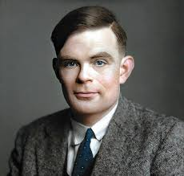
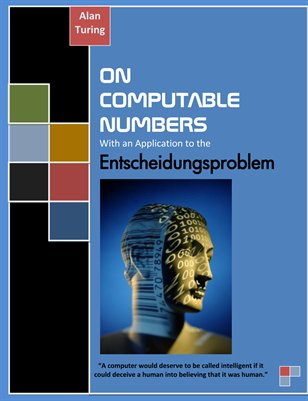
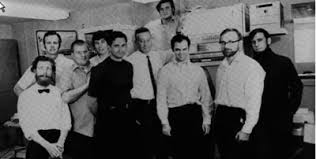
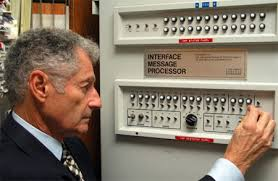
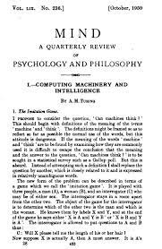
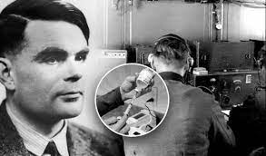
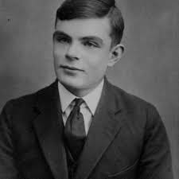

Alan Turing
1912-1954

Indice:
1936 Artículo "On Computable Numbers"
El art&icute;culo "On Computable Numbers, with an Application to the Entscheidungs problem" de Alan Turing fue publicado en 1936. En este art&icute;culo, Turing introdujo la noción de una m´quina autom´tica, ahora conocida como la "m´quina de Turing", que sentó las bases teóricas para el concepto de computabilidad y la teor&icute;a de la computación.
Adem´s, Turing formuló el problema de decisión (Entscheidungsproblem) y demostró que no existe un algoritmo general para determinar si una m´quina de Turing dada eventualmente se detendr´ o continuar´ ejecut´ndose para un conjunto arbitrario de datos de entrada. Esta demostración fue fundamental en el desarrollo de la teor&icute;a de la computación y sentó las bases para la comprensión moderna de los l&icute;mites de la computabilidad.
El trabajo de Turing en este art&icute;culo fue revolucionario y fundamental para el desarrollo de la inform´tica y la teor&icute;a de la computación. Es considerado como uno de los hitos m´s importantes en la historia de la ciencia de la computación.

1939 Máquina Enigma

Durante la Segunda Guerra Mundial, Alan Turing trabajó en Bletchley Park, la sede central de la inteligencia brit´nica, donde hizo contribuciones significativas al descifrado de los códigos Enigma utilizados por las fuerzas alemanas. Sus logros en este campo fueron de vital importancia para el esfuerzo de guerra de los Aliados y se consideran cr&icute;ticos para la victoria en Europa.
Turing fue fundamental en el desarrollo de la "Bomba" de Turing, una m´quina electromec´nica diseñada para descifrar mensajes codificados con la m´quina Enigma. Este dispositivo automatizó gran parte del proceso de descifrado, lo que permitió a los brit´nicos leer r´pidamente las comunicaciones enemigas y obtener información crucial sobre los movimientos y planes de las fuerzas alemanas.
El trabajo de Turing en Bletchley Park no solo fue significativo en t&ecute;rminos de impacto militar, sino que tambi&ecute;n sentó las bases para el desarrollo de la inform´tica y la tecnolog&icute;a de la criptograf&icute;a. Su experiencia en el descifrado de códigos durante la guerra influyó en su pensamiento sobre la computación y la inteligencia artificial, y sus contribuciones posteriores a estos campos fueron enormes.
A pesar de la importancia de su trabajo, la contribución de Turing a la guerra y al esfuerzo de descifrado no fue ampliamente reconocida en su vida, pero su legado en Bletchley Park y su influencia en la historia de la inform´tica son ahora ampliamente celebrados.
Diseño ACE
Alan Turing fue un matem´tico, cient&icute;fico de la computación, lógico, criptoanalista, filósofo y biólogo teórico ingl&ecute;s. Realizó numerosos aportes en diferentes campos, entre ellos:
- En el campo de las matem´ticas, Turing hizo contribuciones significativas a la teor&icute;a de n&ucute;meros, la lógica matem´tica y la teor&icute;a de la computación.
- En el ´mbito de la criptograf&icute;a, Turing fue fundamental durante la Segunda Guerra Mundial al liderar el equipo que logró descifrar el código de la m´quina Enigma utilizada por los nazis. Su trabajo en este campo fue crucial para la victoria de los Aliados.
- Turing tambi&ecute;n es considerado uno de los padres de la inform´tica moderna. Propuso el concepto de una "m´quina universal" que podr&icute;a realizar cualquier c´lculo computacional y sentó las bases teóricas de la computación.
- Adem´s, Turing desarrolló el concepto de la "m´quina de Turing", un modelo teórico que se utiliza para estudiar la computabilidad y la complejidad de los problemas.
Su trabajo sentó las bases para el desarrollo de la inteligencia artificial y la computación moderna.

Articulo

El art&icute;culo de Turing es considerado un trabajo seminal en el campo de la inteligencia artificial. En &ecute;l, Turing discute la posibilidad de que las m´quinas puedan pensar y propone un enfoque pr´ctico para abordar esta cuestión. Tambi&ecute;n explora temas como la naturaleza de la mente y la conciencia, y plantea preguntas fundamentales sobre la relación entre las m´quinas y la inteligencia humana.
El Test de Turing propuesto por Turing en este art&icute;culo ha sido ampliamente debatido y utilizado como un punto de referencia para evaluar la inteligencia artificial. El test consiste en que un juez humano interact&ucute;a con una m´quina y un ser humano a trav&ecute;s de una interfaz de texto, y debe determinar cu´l de los dos es el ser humano y cu´l es la m´quina. Si la m´quina logra engañar al juez y hacerse pasar por un ser humano en un porcentaje significativo de las interacciones, se considera que ha pasado el Test de Turing.
Condena
En 1952, Alan Turing fue acusado de "incidencia grave y perversión sexual" debido a su homosexualidad. Fue condenado a un año de prisión.
Para evitar ir a la c´rcel, Turing aceptó someterse a un tratamiento hormonal conocido como castración qu&icute;mica. Este tratamiento tuvo graves efectos secundarios en su salud f&icute;sica y mental.

Muerte

Desafortunadamente, Turing falleció dos años despu&ecute;s, en 1954, a la edad de 41 años. Su muerte fue atribuida a envenenamiento por cianuro.
Se encontró una manzana mordisqueada junto a su cad´ver, y se cree que esta fue la fuente del veneno.
Sin embargo, es importante destacar que recientemente ha habido cuestionamientos sobre la causa de su muerte. Algunos acad&ecute;micos han planteado la posibilidad de que no haya sido un suicidio, como se cre&icute;a anteriormente.